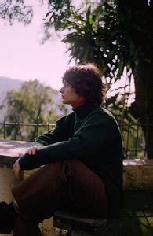

Trajetória
"Quem faz música independente se vê sempre dando um jeito. Sou privilegiada por minha loucura ser escutada."

|
|
|---|---|
"Quem faz música independente se vê sempre dando um jeito. Sou privilegiada por minha loucura ser escutada." |
|
Encontrando a arte |
|
|---|---|
| Descendente de um artista plástico e uma psicóloga, Ana entrou numa escola de música aos seis anos, para fazer aula de experimentação sonora. Aos sete já sabia ler partitura e tocava piano clássico em recitais. Aos dez anos passou na prova de admissão da escola de música Villa Lobos. Foi então que começou a estudar mais aprofundadamente os conceitos de música, escalas,tempo, afinação e teoria musical. Não gostava da ideia de estudar música e fazer provas como obrigação, mas reconhece que foi um incentivo. Aos 16 começou a compor as primeiras músicas que entrariam para seu primeiro álbum, Mormaço Queima. |
Ana ficou sabendo, através da sua irmã, que seu avô sofria bullying dos colegas pela dificuldade que eles tinham de pronunciar o sobrenome de origem russa Fainguelernt, e o apelidaram de "Frango Elétrico". Assim que ouviu essa história, teve a ideia de contar o fato para uma amiga que comentou que o nome era "sua cara". Seu primeiro disco foi uma virada para os planos de Ana, que até então pensava em trabalhar com fotografia, pintura e artes plásticas, mas encantou-se pelos shows e decidiu que era o que queria fazer. |
Entre álbuns e emoções |
|
|---|---|
|  | Em 2019, lança seu segundo álbum de estúdio, “Little Electric Chicken Heart” (Selo RISCO), misturando influências que passeiam dos anos 50 aos 2000, um rock balada jazz com sonoridades antigas e experimentais em colisão. O disco lhe rendeu o prêmio APCA 2019 como “Revelação Musical” (pela Associação Paulista de Críticos de Arte), e as indicações ao Grammy Latino 2020 (na categoria “Melhor álbum de rock em língua portuguesa”), Prêmio Multishow da Música Brasileira (nas categorias “Álbum do ano” e “Revelação”) e Woman Music Event Awards (na categoria “Escuta as minas”). O álbum alcança ainda projeção internacional, sendo resenhado em diversas línguas pela imprensa e crítica especializada e prensado no Japão. Ainda em 2019, Ana assina a direção musical e arquitetura sonora da abertura da exposição “Ballet Literal”, da artista Laura Lima, na galeria Gentil Carioca. No ano seguinte, lança “Escoliose: paralelismo miúdo” (Garupa Edições, 2020), livro em que reúne poemas, gravuras e ilustrações feitos entre 2015 e 2019, onde assimila técnicas e poéticas várias para compor um dos conceitos-chave de seu trabalho, denominado “paralelismo miúdo”. |
“Trata-se de uma poesia com outro DNA geracional” – afirma Heloisa Buarque de Holanda, no posfácio ao livro – “um DNA quase insolente, que, partindo radicalmente para o testemunho pessoal e localizado, desmistifica toda e qualquer aura da poesia (pelo menos aquela dos nobres tempos dos cânones masculinos) em prol da liberação de uma fala corporal, libertária”. | |
|
Nesse mesmo ano, lança “Mama Planta Baby” e “Mulher Homem Bicho”, produzidos à distância e lançados durante o período de isolamento social, pelos quais recebe o prêmio WME 2020 na categoria Melhor produtora musical. |
|
| Fontes: Wikipédia e Prêmio Pipa | |